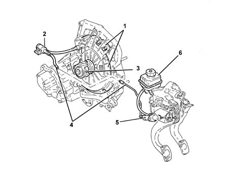

Introduction CLUTCH RELEASE HYDRAULIC OPERATION
- Path
- Descriptions > 18 CLUTCH > 1820 clutch release controls > 1820B CLUTCH RELEASE HYDRAULIC OPERATION > Introduction CLUTCH RELEASE HYDRAULIC OPERATION
- Kind
- system description
- Applies to
- all engines; all production periods
- Interactive page
- https://sloeber94.github.io/elrnDB-lThss/en/#/144407
Applies to: all engines; all production periods

- 1 - Clutch mechanism
- 2 - Impulse damper
- 3 - "CSC" clutch release co-axial hydraulic actuator
- 4 - Pipe connecting pump and actuator
- 5 - Clutch pump
- 6 - Reserve oil reservoir